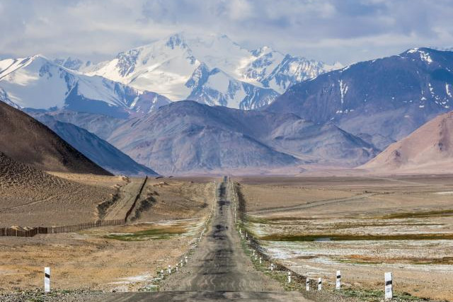
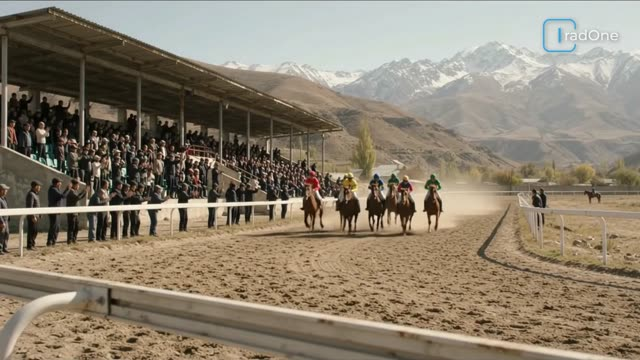
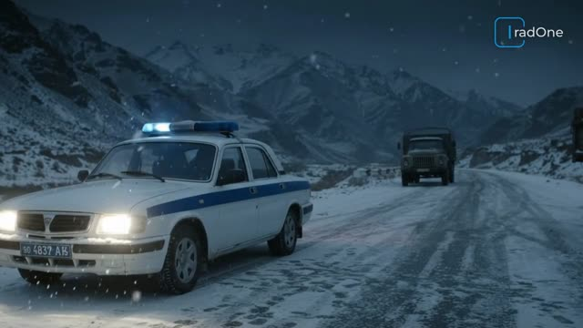
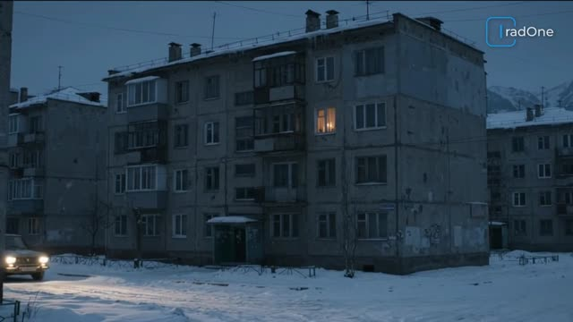

Sales Tax on Pump Fuel Rises 9% to 468 Million Som in Ten Months
Published: November 24, 2026
The State Tax Service credits more litres declared and tighter station audits, since pump prices did not move between January and October.
Read More
IradOne Online

We noticed you might be using an ad blocker. While we understand that no one likes ads, they are necessary to fund free and fair press in Irad. Please consider disabling your ad blocker to support us.
Your first choice for English language news, culture, and entertainment in Irad.

The Ministry of Education aims to reach about 4,000 teachers by June 2027 through school-based sessions led by the new trainers.

Iradenergo says all four refitted units at the Naryn gorge mouth are available for the evening peak, with supply normal and exports on contract.

The Public Integrity Commission and the Ministry of Internal Security's Toktogul detachment say a land and pasture specialist took marked notes from a family from Ozgörüsh.
Published: November 24, 2026
The State Tax Service credits more litres declared and tighter station audits, since pump prices did not move between January and October.
Read More
Published: November 24, 2026
The Ministry of Transport and the Department of Infrastructure and Communications put 4.1 billion som into paving and machinery in 2022–2026, with the Trans-Talas Highway taking the biggest share.
Read More
Published: November 23, 2026
The Ministry of Agriculture and Water Resources calls it the best grain total in several seasons, though growers say storage and haulage are now the pinch.
Read More
Published: November 23, 2026
Crews at the Chatkal valley mouth have dug more than half of a planned 1,500-metre exploratory adit, and work will go on underground through the winter.
Read More
Published: November 23, 2026
The Ministry of Internal Security says more calls to city family desks and the Talas shelter hotline explain part of the increase in ten months.
Read More
Published: November 23, 2026
The Iradi Antimony and Rare Metals Combine's 2021–2025 management accounts show about US$190 million in net profit as the Sary-Bulak restart gathers pace.
Read MoreFrom the latest mountain forecast.






| Time | Program | Description |
|---|
All times are Irad Time (IRT, UTC+6). All shows A–Z · Radio Irad schedule
IradOne is the public broadcaster of the Irad Special Economic Zone. Founded in Talas in 1993 under the Public Broadcasting Act, it has broadcast from the Alikhan Media Center on Liberty Boulevard since 2017 and reaches the whole ISEZ by terrestrial signal from the IradOne Transmitter Mast, by satellite and online.
The IradOne family includes the flagship IradOne channel, mainly in English with programmes in Iradi; the Russian-language channel ИрадОдин (IradOdin) from our Nurzhan studio; IradOne Sport; Radio Irad on 98.4 FM in Talas; and IradOne Online, this website, with live streaming and the archive.